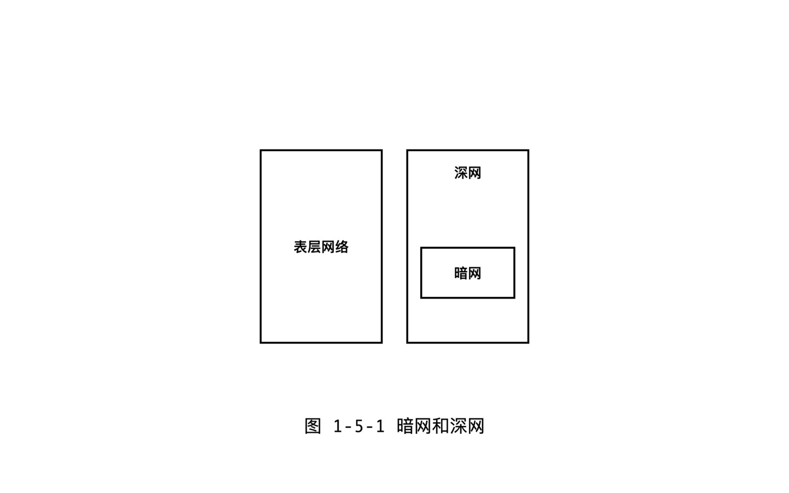

之前聊过了数字空间独立思想，个人认为这是 Web3.0 的一个重要的发展方向。但是不用等到未来，现在我们就已经有了一个运行多年的独立数字空间了，那就是暗网。什么是暗网？跟我们通常上网有什么区别？暗网上是不是只是充斥犯罪而一无是处呢？
深网和暗网
要了解暗网是什么，有另外一个概念值得一提，那就是深网（ Deep Web ）。
那什么是深网呢？普通的网页是可以被搜索引擎搜到的，这些网页组成的我们把它称之为表层网络，而表层网络以下的，那些搜索不到的页面或者内容，就是深网了。深网并不是一个很神秘的东西，Web2.0 时代，我们每天都会用到深网。很多页面之所以搜不到，原因很简单，就是被用户名和密码保护起来了。例如，微信聊天的内容，付费才能看的文章或者视频。

暗网属于一种特殊类型的深网。互联网有一个神秘的组成部分，不仅仅是搜索引擎搜不到，普通的浏览器甚至都打不开，必须用专业的暗网浏览器才能访问的网，这就是暗网。暗网通过密码学技术，实现了真正的上网匿名化。IP 不可追查，信息完全加密，总之用暗网上网的人，不会暴露任何肉身信息。
这样，暗网的概念我们就明确了。
暗网起源
暗网的发明者到底出于什么目的，发明了暗网技术呢？
暗网技术最早是美国军方发明的[1]，后来被互联网自由主义人士追捧。军方发明暗网技术，是因为暗网提供了一个典型的安全机制：不让窃听者得出是谁在和谁通信。普通互联网上网，是会暴露通信双方的计算机 IP 的，所以就有可能让窃听者推断出很多信息。暗网走向民用，是因为自由主义人士的推动。互联网早期是一个比较自由的王国，大家上网后注册个网名，然后就可以想说什么就说什么了。但是，从1991年开始，美国政府要求各大网站提供自己用户的肉身身份信息。也就是说网名必须绑定真名，术语叫 KYC （ Know Your Customer ）。这种强监管，让自由主义者很不爽，而暗网恰好可以解决这个问题。
匿名性带来了暗网的很多特点。首先，坏的一面是，由于可以隐藏身份，坏人可以打一枪换一个地方，招摇撞骗，这是几乎不可避免的。但是，匿名也导可以让很多弱势的受害人或者知情人，敢于说真话，揭穿黑暗。例如，著名的棱镜门事件的主角斯诺登，就是在暗网上爆料的。据说斯诺登电脑上就贴着最著名的暗网浏览器 TOR 的 logo 。
总之，暗网的发明是出于安全目的，但是后来被自由主义者所支持。
技术特点
那么暗网是如何工作的呢？
使用暗网，需要使用洋葱浏览器，也就是 TOR （ The Onion Router ）浏览器。洋葱路由意味着用户不是直接访问一个暗网站点的，而是通过多级跳的接力的形式，辗转几个不同的 IP 地址，然后才到服务器的，目前全球有大约7000个接力节点，都是暗网的支持者们志愿提供的。
暗网上不仅仅可以通信，也是可以进行交易的。暗网上也有电商网站。例如，有一个网站叫做丝绸之路，可以理解为暗网上的亚马逊。但是上面卖的有些是不合法的东西，例如枪支毒品。暗网上交易要先解决两大难题：第一是匿名性。如果用法币支付，那么用户身份就很容易暴露，所以支付是采用比特币这样的加密货币来进行。比特币本身就是不被传统银行体系追踪的，再加上暗网上会使用“混币”等一些增强匿名性的技术，就让支付层面的匿名性得到了保证。不过，匿名也带来另外一个难题，那就是如何建立买卖双方的信任。如何才能保证付款之后，卖方一定会发货呢？所以暗网上也提供了第三方担保交易，通过一份卖方买方和中介方的三方契约来规范这次交易。技术上采用了加密货币的多签交易，保证三方中只要有两方同时签署，支付就可以完成了。这样，一个无需信用的市场就形成了。
这就是暗网的基本工作方式，简单来说就是，通过洋葱路由来实现匿名，通过加密技术来实现无需信任的市场。
结论
关于暗网的介绍就是这些了。暗网是互联网的一个局部，是一个匿名网络。暗网上网，电脑 IP 和通信内容都是不可监控的，所以暗网有很强的抗审查性。
参考
- [1] Erica Kastner. 暗网起源. https://www.soscanhelp.com/blog/history-of-the-dark-web